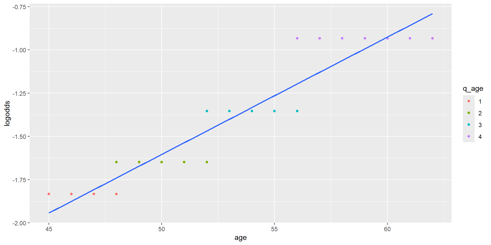
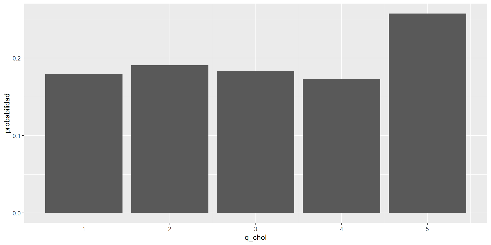
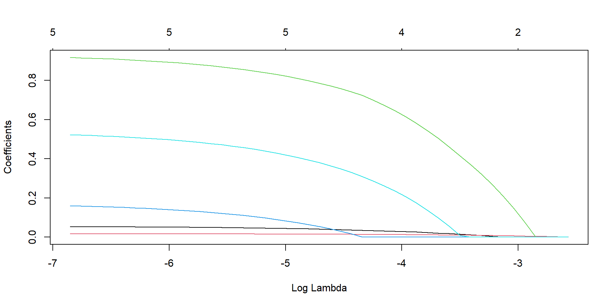
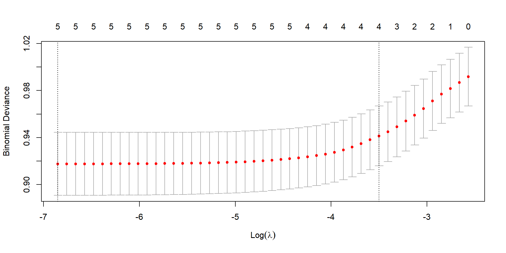

| q_age | eventos | p_eventos |
|---|---|---|
| 1 | 47 | 0.1378299 |
| 2 | 55 | 0.1612903 |
| 3 | 70 | 0.2052786 |
| 4 | 96 | 0.2823529 |
Construccion del Modelo
Diego Halac
Objetivos
Conocer las etapas en la construcción de modelos de regresión logística.
Discutir los métodos de selección de las variables del modelo de regresión.
CONSTRUCCION DEL MODELO DE REGRESION
La construcción de un modelo de regresión múltiple implica el desarrollo de una estrategia que pueda identificar, entre las variables independientes disponibles, la combinación que brinde la mejor respuesta al problema que se pretende resolver.
Modelo Predictivo
Combinación de variables que mejor predice el evento de interés. Se intenta encontrar un modelo con la menor cantidad posible de variables (Parsimonioso)
Modelo de Ajuste (factor de Risego)
Las variables son consideradas en función de su relación con el FR de interés. El modelo final es, en gral. más grande.
Para construir un modelo necesitamos:
Un proceso de selección de variables
- La selección de las variables de un modelo puede estar basada en motivos biológicos y/o estadísticos.
Los métodos para evaluar tanto las variables individuales como la performance global en términos de validez interna y externa dentro del contexto del estudio.

Proceso de Selección de Variables
- Análisis Bivariable → Evaluar la relación de cada variable independiente con el evento.
- Si bien se pueden usar los tests ya conocidos para variables categóricas y continuas, es recomendable también estimar inicialmente el modelo de regresión logística simple para cada variable y obtener los coeficientes crudos.
- Si bien para las variables continuas se debe chequear el supuesto de relación lineal con el logit , en esta etapa uno puede asumir linealidad ya que, a menos que haya una relación claramente no lineal (p.ej. en U o J), cualquiera sea la relación monotónica en gral. mostrará una tendencia significativa.
Seleccion de Variables
Varias Estrategias. Depende de acceso a datos, caracteristicas de los mismos.
- Incluir todas las variables importantes desde el punto de vista científico más allá del resultado del análisis bivariable
- Podría ser si tenemos un n grande y el número de variables está en relación con el de eventos (recordar la regla al menos 10 eventos por variable)
- Ojo con multicolinealidad , pérdida de precisión e inestabilidad de los coeficientes estimados.
- Seleccionar en base al análisis bivariable y redefinir importancia de c/u.
- Útil cuando tenemos n pequeño o nos interesa particularmente un modelo parsimonioso (ej. Predicción clínica)
- OJO!!! Podemos estar eliminando variables que no sabemos como pueden jugar en el contexto multivariable
- Establecer criterios amplios de selección inicial (p.ej. p < 0.25)
Integración de Variables en el Modelo de RL
Una vez filtradas por el análisis inicial, las variables se van agregando una a una y se evalúa la importancia de cada una a medida que se va construyendo el modelo multivariable .
Verificar el Wald test de cada variable y la variación del coeficiente con respecto al estimado para esa variable en el modelo simple.
- Evaluar el efecto de confundidores sobre el FR de interés.
- Descartar variables no significativas y estimar nuevamente el modelo con las que quedan.
Repetir este proceso hasta lograr incluir todas las variables biológica y estadísticamente relevantes.
Si fuera necesario, se pueden reevaluar una a una las variables no seleccionadas en el análisis inicial ( bivariable ). Si alguna es significativa, evaluar su inclusión en el modelo.
Variables COntinuas
Evaluar el formato adecuado de las variables continuas (linealidad vs otro formato)
Diseño de variables categóricas múltiples ( dummies)
Determinar categorías de la variable continua (ej. Cuartilos , quintilos , escala cada 10, etc.)
Generar una variable categórica que tome los distintos niveles
Incluirla en el modelo en lugar de la variable continua usando la categoría inferior como referencia.
Evaluar como varían los coeficientes en cada categoría (en forma ascendente o descendente?).
Graficar los coeficientes en cada categoría y evaluar si la variación es aceptablemente lineal
Ejemplo: edad en 4 categorías
Ejemplo (cont)
| newchd | ||||
| Predictors | Log-Odds | std. Error | CI | p |
| q_age2 | 0.18 | 0.22 | -0.24 – 0.61 | 0.391 |
| q_age3 | 0.48 | 0.21 | 0.08 – 0.89 | 0.020 |
| q_age4 | 0.90 | 0.20 | 0.52 – 1.30 | <0.001 |
| Observations | 1363 | |||
| Deviance | 1325.711 | |||
| log-Likelihood | -662.856 | |||
También se puede evaluar la linealidad en un contexto multivariable.
Métodos Gráficos
Otra posibilidad es realizar un plot entre la el \(log odds\) del evento y las categorias de la variable independiente continua y evaluar la adecuación de una recta a la dispersión de los puntos.

Variables Continuas
Cuando el análisis sugiere una relación no lineal entre la variable continua y el log odds del evento , se debe redefinir otro formato (dicotómica o categórica múltiple)
Categorías
- puntos de corte sugeridos por la relación o creados como cuartilos , quintilos etc. dejando una de las categorías como la de referencia.
- Confundidores
- A medida que vamos agregando variables al modelo Verificar cambios importantes en los coeficientes.
- AL COMPLETAR ESTOS PASOS SE OBTIENE EL MODELO DE EFECTOS PRINCIPALES (MAIN EFFECTS MODEL)
Evaluar necesidad de incluir términos de interacción (ser conservador)
Para las variables continuas es necesario haber chequeado el supuesto de linealidad.
Una vez creados los términos de interacción (en base a criterios científicos, información previa, etc.) su contribución al modelo global se evalúa a través del Wald test y fundamentalmente el sentido común
La inclusión de términos de interacción debe estar muy bien fundada ya que pueden complicar enormemente la interpretabilidad del modelo.
Proceso (Automático) de Selección de Variables
- Subset Selection:
- Best Subset
- Stepwise [forward / Backward]
- Best Subset
- Regularizacion:
- Ridge (L2)
- Lasso (L1)
- Elastic Net (L1+L2)
- Reduccion de Dimensionalidad:
- PCA
- Correspondencia
Subset Selection
- Best Subset:
- Se debe elegir el numero de predictores.(\(k\))
- Se analizan todos los posibles casos para 1,2,3….k variables y nos quedamos con el mejor (Deviance, Loglikelihood…)
- OVERFITTING
- CONSUMO COMUPTACIONAL (\(2^k\) Modelos)
- Stepwise forward:
- Al modelo nulo, se agregan todas las posibilidades de una variable. sobre el mejor, la segunda y asi hasta \(k\).
- Se comparan los mejores modelos para cada valor de \(k\) y se elije.
- Tiene menos OVERFITTING y mucho menor CONSUMO.
- Stepwise Backwards:
- Se parte de un modelo con todos los predictores y se va sacando de a una.
- Ventaja sobre Stepwise Forward: permite ver relacion entre todas las variables.
Regularizacion
Agrega un un termino de penalizacion por cada predictor incluido. Mejora OVERFITTING, disminuye VARIANZA, Atenua efecto de correlacion entre los predictores.
- RIDGE (L2) Tiene el efecto de reducir de forma proporcional el valor de todos los coeficientes del modelo pero sin que estos lleguen a cero.Especialmente util para lidiar con variables muy correlacionadas. produce coeficientes mas estables (no varian tanto con pequeños cambios en observaciones).
\(J(\theta) = -\frac{1}{m} \sum_{i=1}^{m} \left[ Y_i \log\left(\frac{1}{1 + e^{-(\beta_0 + \beta_1X_i)}}\right) + (1 - Y_i) \log\left(\frac{1}{1 + e^{(\beta_0 + \beta_1X_i)}}\right) \right] + \frac{\lambda}{2m} \sum_{j=1}^{n} \theta_j^2\)
- LASSO (L1)
Lidia mejor con variables irrelevantes. selecciona variables.funciona peor con cantidades muy gradndes de variables.
\(J(θ) = -\frac{1}{m} \sum_{i=1}^{m} \left[ Y_i \log\left(\frac{1}{1+e^{-(\beta_0+\beta_1 X_i)}}\right) + (1-Y_i) \log\left(1 - \frac{1}{1+e^{-(\beta_0+\beta_1 X_i)}}\right) \right] + \lambda \sum_{j=1}^{n} |\theta_j|\)
Regulrizacion (cont)
- Elasticnet
Es una mezcla de ambas. proporciona una mezcla entre seleccion de variables y estabilidad de coeficientes. es interpretable pero robusto.
\(J(θ) = -\frac{1}{m} \sum_{i=1}^{m} \left[ Y_i \log\left(\frac{1}{1+e^{-(\beta_0+\beta_1 X_i)}}\right) + (1-Y_i) \log\left(1 - \frac{1}{1+e^{-(\beta_0+\beta_1 X_i)}}\right) \right]\)
\(+ \lambda \left( \alpha \sum_{j=1}^{n} |\theta_j| + \frac{(1-\alpha)}{2} \sum_{j=1}^{n} \theta_j^2 \right)\)
Hosmer & Lemershow
“La amplia disponibilidad y difusión de estos métodos de selección automática en los paquetes estadísticos hizo que muchos investigadores sean ahora meros asistentes de la computadora en la selección de variables y modelos.
No hay que olvidar que el responsable de la revisión y evaluación del modelo es siempre el investigador”
Ejemplo de contruccion de un modelo (proceso manejado por el Investigador)
Paso 1: Análisis bivariable
- Estimación del efecto de cada variable sobre el riesgo de EC en un Modelo logístico simple (análisis bivariable)
| Characteristic | N | log(OR) | 95% CI | p-value |
|---|---|---|---|---|
| age | 1,363 | 0.07 | 0.04, 0.09 | <0.001 |
| sbp | 1,363 | 0.02 | 0.01, 0.02 | <0.001 |
| dbp | 1,363 | 0.03 | 0.02, 0.04 | <0.001 |
| chol | 1,363 | 0.00 | 0.00, 0.01 | 0.009 |
| sex | 1,363 | 0.71 | 0.44, 0.98 | <0.001 |
| male | 1,363 | 0.71 | 0.44, 0.98 | <0.001 |
| pelo | 1,363 | |||
| morocho | — | — | ||
| pelirrojo | 0.20 | -0.13, 0.52 | 0.23 | |
| rubio | -0.07 | -0.41, 0.27 | 0.67 | |
| ojos | 1,363 | |||
| azul | — | — | ||
| marron | 0.30 | -0.03, 0.62 | 0.073 | |
| verde | 0.10 | -0.24, 0.45 | 0.55 | |
| smoker | 1,362 | 0.25 | -0.02, 0.51 | 0.071 |
| Abbreviations: CI = Confidence Interval, OR = Odds Ratio | ||||
Paso 2: Selección de las variables en el modelo múltiple
Cuál es la estrategia?
Variables importantes (plausibilidad, información previa, hipótesis, etc)
n adecuado ( recordar entre 10 y 20 eventos por variable en el modelo final)
Eventos suficientes (cuál es el número de eventos?)
Evaluar la importancia de cada variable:
variación del coeficiente (simple múltiple)
Wald test
evaluar necesidad de términos de interacción
Continuando con el ejemplo…
Inclusion de variables Manual.
| newchd | |||
| Predictors | Log-Odds | CI | p |
| sex | 0.71 | 0.44 – 0.98 | <0.001 |
| Observations | 1363 | ||
| log-Likelihood | -662.432 | ||
| newchd | |||
| Predictors | Log-Odds | CI | p |
| age | 0.07 | 0.04 – 0.10 | <0.001 |
| sex | 0.72 | 0.44 – 0.99 | <0.001 |
| Observations | 1363 | ||
| log-Likelihood | -651.766 | ||
Ejemplo (cont)
| newchd | newchd | |||||
| Predictors | Log-Odds | CI | p | Log-Odds | CI | p |
| age | 0.05 | 0.02 – 0.08 | 0.001 | 0.05 | 0.02 – 0.08 | 0.001 |
| chol | 0.00 | 0.00 – 0.01 | 0.003 | |||
| sbp | 0.02 | 0.01 – 0.02 | <0.001 | 0.02 | 0.01 – 0.02 | <0.001 |
| sex | 0.92 | 0.63 – 1.21 | <0.001 | 1.01 | 0.72 – 1.32 | <0.001 |
| Observations | 1363 | 1363 | ||||
| log-Likelihood | -626.304 | -621.762 | ||||
Que hacemos con Smoker??
| smoker | newchd | Total | |
|---|---|---|---|
| 0 | 1 | ||
| 0 | 614 82.1 % |
134 17.9 % |
748 100 % |
| 1 | 480 78.2 % |
134 21.8 % |
614 100 % |
| Total | 1094 80.3 % |
268 19.7 % |
1362 100 % |
| χ2=3.018 · df=1 · &phi=0.049 · p=0.082 | |||
Con Smoker
| newchd | ||
| Predictors | Log-Odds | p |
| age | 0.054 (0.024 – 0.085) |
<0.001 |
| chol | 0.005 (0.002 – 0.008) |
0.003 |
| sbp | 0.017 (0.012 – 0.022) |
<0.001 |
| sex | 0.958 (0.649 – 1.274) |
<0.001 |
| smoker | 0.175 (-0.124 – 0.473) |
0.251 |
| Observations | 1362 | |
| log-Likelihood | -620.771 | |
Con Smoker ODDS
| newchd | ||
| Predictors | Odds Ratios | p |
| age | 1.056 (1.025 – 1.088) |
<0.001 |
| chol | 1.005 (1.002 – 1.008) |
0.003 |
| sbp | 1.017 (1.012 – 1.022) |
<0.001 |
| sex | 2.608 (1.913 – 3.576) |
<0.001 |
| smoker | 1.191 (0.884 – 1.605) |
0.251 |
| Observations | 1362 | |
| log-Likelihood | -620.771 | |
Elección de la mejor escala de variables continuas
| q_chol | Media | Cantidad |
|---|---|---|
| 1 | 174.4945 | 273 |
| 2 | 208.9963 | 273 |
| 3 | 230.0330 | 273 |
| 4 | 256.4301 | 272 |
| 5 | 303.4890 | 272 |
Graficamente

q_chol (cont)
| q_chol | newchd | Total | |
|---|---|---|---|
| 0 | 1 | ||
| 1 | 224 82.1 % |
49 17.9 % |
273 100 % |
| 2 | 221 81 % |
52 19 % |
273 100 % |
| 3 | 223 81.7 % |
50 18.3 % |
273 100 % |
| 4 | 225 82.7 % |
47 17.3 % |
272 100 % |
| 5 | 202 74.3 % |
70 25.7 % |
272 100 % |
| Total | 1095 80.3 % |
268 19.7 % |
1363 100 % |
| χ2=8.215 · df=4 · Cramer's V=0.078 · p=0.084 | |||
Dicotomizar o no Dicotomizar
| D_chol | newchd | Total | |
|---|---|---|---|
| 0 | 1 | ||
| 0 | 893 81.9 % |
198 18.1 % |
1091 100 % |
| 1 | 202 74.3 % |
70 25.7 % |
272 100 % |
| Total | 1095 80.3 % |
268 19.7 % |
1363 100 % |
| χ2=7.460 · df=1 · &phi=0.076 · p=0.006 | |||
Y si tenemos otras variables….
| newchd | |||
| Predictors | Log-Odds | CI | p |
| age | 0.05 | 0.02 – 0.09 | <0.001 |
| D_chol | 0.54 | 0.20 – 0.87 | 0.002 |
| azul | Reference | ||
| marron | 0.32 | -0.02 – 0.66 | 0.065 |
| verde | 0.02 | -0.34 – 0.38 | 0.914 |
| morocho | Reference | ||
| pelirrojo | 0.20 | -0.15 – 0.54 | 0.263 |
| rubio | -0.06 | -0.42 – 0.29 | 0.725 |
| sbp | 0.02 | 0.01 – 0.02 | <0.001 |
| sex | 0.95 | 0.64 – 1.26 | <0.001 |
| smoker | 0.17 | -0.13 – 0.47 | 0.272 |
| Observations | 1362 | ||
| log-Likelihood | -617.017 | ||
LASSO


8 x 1 sparse Matrix of class "dgCMatrix"
s0
(Intercept) -7.44886929
age 0.05326933
sbp 0.01687651
sex 0.91749213
pelo .
ojos .
smoker 0.16040510
D_chol 0.52351753Modelo de Efectos Principales
| newchd | ||||
| Predictors | Odds Ratios | std. Error | CI | p |
| age | 1.06 | 0.02 | 1.03 – 1.09 | <0.001 |
| D_chol | 1.72 | 0.29 | 1.23 – 2.40 | 0.001 |
| male | 2.55 | 0.40 | 1.88 – 3.48 | <0.001 |
| sbp | 1.02 | 0.00 | 1.01 – 1.02 | <0.001 |
| smoker | 1.19 | 0.18 | 0.88 – 1.61 | 0.249 |
| Observations | 1363 | |||
| Deviance | 1241.284 | |||
| log-Likelihood | -620.642 | |||
INTERACCIONES
| newchd | ||||
| Predictors | Odds Ratios | std. Error | CI | p |
| age | 1.06 | 0.02 | 1.03 – 1.09 | <0.001 |
| D_chol | 1.71 | 0.29 | 1.23 – 2.38 | 0.001 |
| hta | 3.28 | 0.85 | 2.00 – 5.58 | <0.001 |
| hta:sex | 0.60 | 0.19 | 0.31 – 1.10 | 0.105 |
| sex | 3.34 | 0.90 | 2.00 – 5.79 | <0.001 |
| smoker | 1.17 | 0.18 | 0.87 – 1.58 | 0.296 |
| Observations | 1363 | |||
| Deviance | 1253.717 | |||
| log-Likelihood | -626.858 | |||
RESUMEN
- Modelo Predictivo vs Modelo de Ajuste
- Proceso de seleccion de variables
- Depende del Investigador
- Step Forward, Backward, Regularizacion, etc…
- Analisis Bivariado
- manejo de variables continuas
- evaluacion de confundidores
- Modelo de Efectos Principales
- Evaluar Interaccion